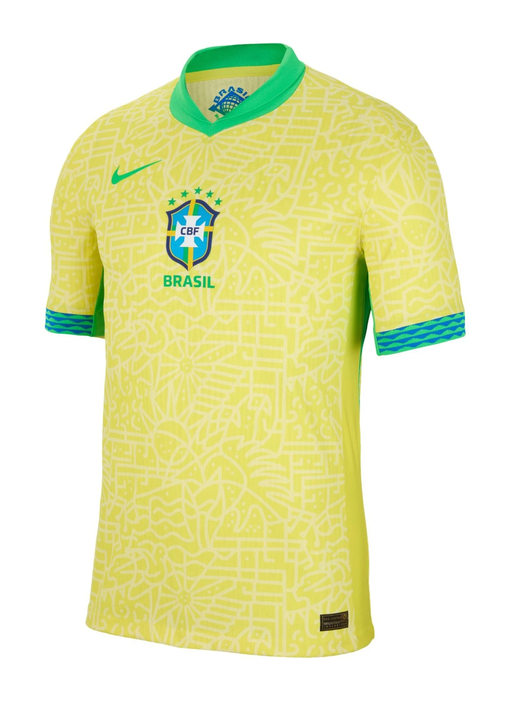

1. Pelé’s Dummy Against Uruguay
It’s June 17, 1970, at Guadalajara’s Estadio Jalisco—Brazil vs. Uruguay in the semi-final, a grudge match dripping with history. The ghosts of 1950’s Maracanazo—Uruguay’s 2-1 upset in Rio—haunt the 68,009 fans, their roars shaking the stands. Brazil trail 1-0 early to Luis Cubilla’s strike, but Clodoaldo’s equalizer drags them back to 1-1. Tension crackles—every pass a pulse. Then, in the 44th minute, Tostão spots Pelé breaking free and threads a perfect ball through Uruguay’s defense.
Pelé, 29, a two-time World Cup winner (1958, 1962), sprints toward goal—his yellow No. 10 a blur against Mexico’s green turf. Uruguay’s keeper, Ladislao Mazurkiewicz, charges out, eyes locked on the ball. What happens next is football’s Mona Lisa: Pelé doesn’t shoot. He doesn’t touch it. With a hip feint, he lets the ball roll past Mazurkiewicz’s right, darting left around the sprawling keeper in one fluid motion. The crowd gasps—time freezes. It’s audacity distilled—a dummy so bold it’s reckless, turning a semi-final into a playground trick.
The net’s wide open, 68,000 voices screaming—but Pelé’s angle narrows as he rounds Mazurkiewicz. He strikes from a tightening window, the ball skidding inches wide of the far post. No goal, yet the miss doesn’t matter. Commentator Osmar Santos screams, “This is genius!” as replays sear the image into history: Pelé, mid-stride, grinning, the keeper flat. Brazil win 3-1—Jairzinho and Rivellino score later—but this is the moment fans replay forever. “I wanted to surprise him,” Pelé laughs later. “Maybe I surprised myself too.”
It’s more than a play—it’s Brazil’s samba soul unleashed: flair over fear, art over outcome. Uruguay’s coach, Juan Hohberg, calls it “unbelievable”; Mazurkiewicz admits, “I felt like a fool.” It births a thousand YouTube clips, a staple in every “greatest plays” montage. Not the goal that wasn’t—but the dare that was, a 10-second masterclass in why Pelé’s the King. For Brazil, it’s a dagger burying 1950’s ghosts en route to glory. For football, it’s eternal.
2. Carlos Alberto’s Thunderbolt in the Final
June 21, 1970, Estadio Azteca—107,412 fans bake under Mexico’s sun as Brazil face Italy in the final. Up 3-1 with minutes left, Brazil’s samba machine hums—Pelé, Jairzinho, Rivellino clicking like gears. Then, in the 86th minute, it erupts: Clodoaldo picks the ball up deep, dribbles past four Italians with a samba flick—hips swaying, feet dancing. The move ignites: he feeds Rivellino, who finds Jairzinho wide. The Hurricane cuts inside, rolls it to Pelé at the edge of the box.
Pelé, calm as ever, doesn’t look—he drops a no-look layoff into space, sensing Captain Carlos Alberto bombing down the right. The full-back, 25, meets it 20 yards out and unleashes a thunderbolt—low, hard, unstoppable. Enrico Albertosi dives, but the ball rips past him, bulging the net’s far corner. 4-1. The crowd explodes—107,000 voices in unison, a roar heard across Mexico City. It’s not just a goal—it’s football’s Sistine Chapel, a nine-pass symphony ending in a crescendo.
Brazil’s third title is sealed—the Jules Rimet Trophy theirs to keep. In the first World Cup broadcast globally in color, the yellow and green dazzle 500 million viewers. Coach Mário Zagallo calls it “perfection”; Pelé says, “It was our soul.” Italy’s defenders, shell-shocked after a 4-1 rout, can only nod—Giacinto Facchetti mutters, “They’re unstoppable.” The sequence—Clodoaldo’s flair, Pelé’s vision, Carlos Alberto’s rocket—becomes the gold standard of teamwork, replayed endlessly. “I saw the gap and hit it,” Carlos Alberto shrugs later, underselling a strike that echoes through decades.
It’s Brazil at their peak—averaging three goals a game, blending ruthlessness with beauty. The 1970 final isn’t a match; it’s a coronation, and this goal is the crown jewel. For fans, it’s the moment football became art—every pass a brushstroke, every touch a masterpiece. Fifty years on, it’s still the benchmark: teamwork, timing, and a finish that shakes the earth. A thunderbolt for the ages.
3. Jairzinho’s Every-Game Scoring Streak
Jairzinho, “The Hurricane,” doesn’t just play Mexico 1970—he owns it. Across six matches, he scores in every one—seven goals total, a World Cup record unmatched since. It starts June 3 at Jalisco: Czechoslovakia, 4-1—Jairzinho bags a brace, one a curling beauty past Ivo Viktor. Next, England, June 7—1-0, a screamer past Bobby Moore’s lunge and Gordon Banks’ dive. Romania, June 10—3-2, another goal, his power shredding defenses in 35°C heat.
Quarter-final vs. Peru, June 14—4-2, he strikes again, a dipping shot that leaves Luis Rubiños grasping air. Semi-final, Uruguay, June 17—3-1, he slots the second, burying 1950’s ghosts. Then the final, June 21 vs. Italy—4-1, he chests Pelé’s header down and fires past Albertosi for the opener. Seven goals, six games—25 years old, broad shoulders, lightning pace, a right foot like a cannon. Brazil’s attack flows through him, a one-man storm in Mexico’s thin air.
“I felt invincible,” Jairzinho says later, grinning. Defenders don’t—England’s Terry Cooper calls him “a nightmare”; Italy’s Tarcisio Burgnich admits, “He exhausted us.” Alongside Pelé and Rivellino, he’s the pulse of a team averaging three goals a match—16 players score across the tournament, but Jairzinho’s streak is its heartbeat. His final goal, in front of 107,412, seals Brazil’s dominance—a chested finish that screams control amid chaos. No one’s done it since—every game, every time.
It’s not just stats—it’s legacy. Jairzinho’s power and flair make 1970 a Brazilian symphony, a hurricane tearing through history. Fans still chant his name; clips of his runs—head up, ball glued to his boot—light up X. “He was everywhere,” Pelé recalls. In a tournament of giants, Jairzinho stands tallest—a streak that’s football immortality.
4. Gordon Banks’ Save of the Century
June 7, 1970, Estadio Jalisco—Brazil vs. England, group stage, 52,897 fans sweltering in Guadalajara’s heat. It’s 0-0, 10 minutes in—Jairzinho, “The Hurricane,” storms down the right, outpacing Terry Cooper. He whips a cross high and hard to the back post, where Pelé—two-time World Cup king—rises like a god. At 5’8”, he outjumps Bobby Moore, England’s 6’0” titan, and hammers a downward header—six yards out, arrowing for the bottom corner.
Gordon Banks, England’s keeper, is rooted—then reacts. As the ball rockets toward the net, he dives right, stretching every sinew of his 6’1” frame. His right hand flicks out, scooping the ball up and over the bar—an impossible arc defying physics. The crowd erupts; Pelé stares, stunned. “I thought it was in,” he says later, shaking his head. Banks lands in a heap, teammates mobbing him—Bobby Charlton gasps, “What a save!” Commentators lose it: “The greatest ever!”
Brazil win 1-0—Jairzinho scores later—but Banks’ stop steals the show. “It was instinct,” he shrugs post-match, sweat-soaked. Pelé calls it “unbelievable”; Brazil’s coach, Zagallo, admits, “We thought we’d scored.” In an era before slow-mo replays dominate, the moment’s raw power shines—clips show Banks’ dive, Pelé’s disbelief, the ball’s improbable flight. England’s defense holds Brazil to one goal—a miracle in a tournament where they average three—but Banks’ save is the gem.
It’s dubbed “The Save of the Century”—a title unchallenged 50 years on. Banks, already a 1966 winner, cements his legend; Pelé, denied, still bows to it. “He was the best I faced,” Pelé says. For fans, it’s football’s ultimate defiance—a split-second where one man stops Brazil’s samba juggernaut. A save that echoes louder than goals.